Infiltrazioni e iniezioni
Un farmaco portato nel punto esatto, a mano libera o seguendo l'ago con l'ecografo.
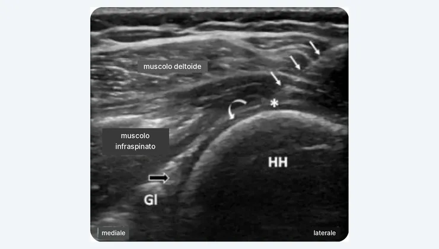
Infiltrazione della spallaA mano libera ed ecoguidata: quando si propone, com'è la seduta e quanto dura l'effetto.Apri la scheda →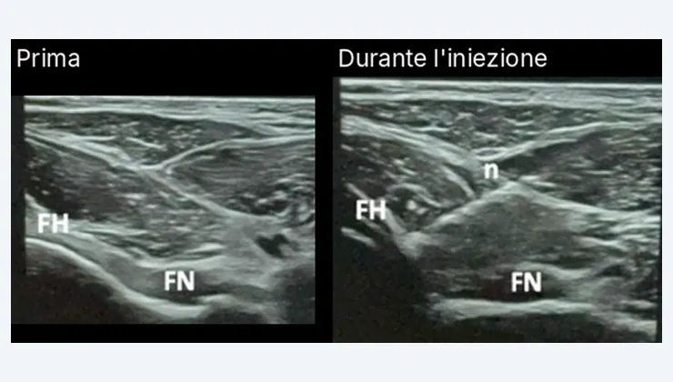
Infiltrazione dell'ancaPerché si esegue con l'ecografo, quanto dura l'effetto e quando conviene.Apri la scheda →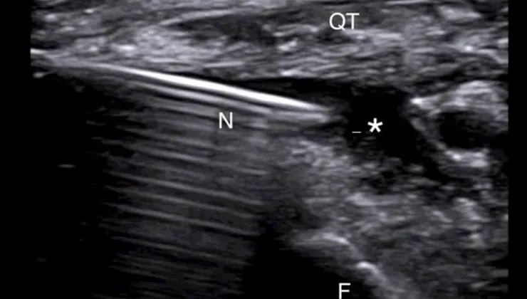
Acido ialuronicoChe cosa ci si può aspettare dalla viscosupplementazione, e che cosa no.Apri la scheda →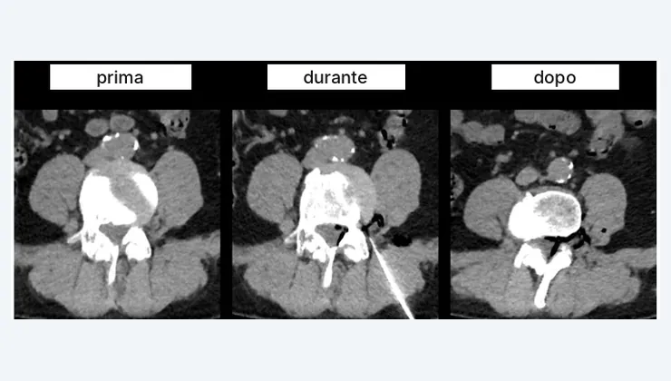
Ossigeno-ozono terapiaDove i dati sono incoraggianti, dove restano incerti e quali sono i limiti di dose.Apri la scheda →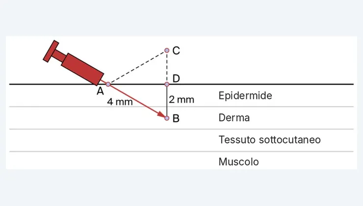
MesoterapiaMicro-iniezioni di farmaco appena sotto la pelle, nel punto che fa male.Apri la scheda →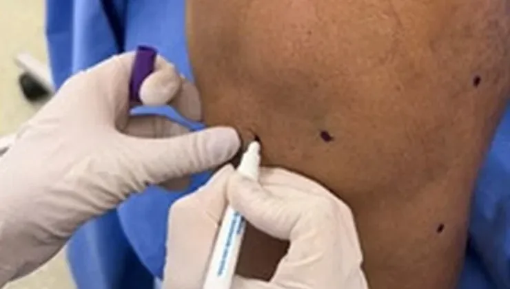
ProloterapiaDove ha mostrato di funzionare, e dove invece no.Apri la scheda →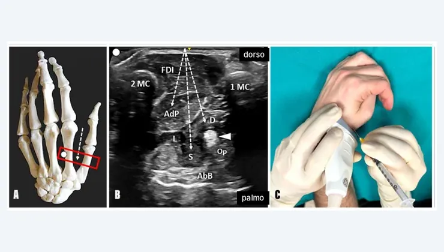
Tossina botulinicaRidurre per qualche mese la contrazione involontaria di un muscolo.Apri la scheda →Trattamenti ecoguidati con ago
Qui l'ago non porta un farmaco: svuota un deposito di calcio, distende una capsula retratta, porta una corrente dentro il tendine.
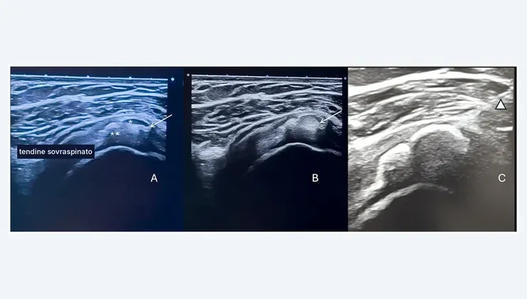
Barbotage della spalla calcificaCome si svuota con un ago il deposito di calcio nel tendine.Apri la scheda →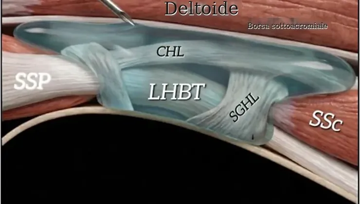
Idrodilatazione della capsuliteDistendere con un liquido la capsula retratta nella spalla congelata.Apri la scheda →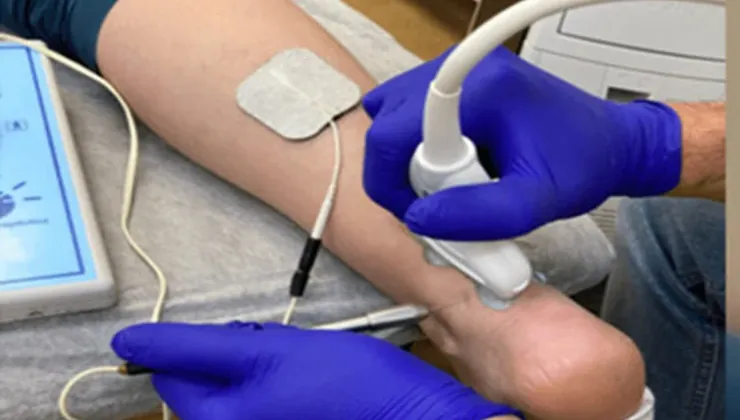
Elettrolisi percutaneaUna corrente portata nel tendine con un ago, sempre insieme agli esercizi.Apri la scheda →Terapie strumentali
Energia applicata al tessuto dall'esterno o attraverso un ago: onde acustiche, vibrazione, radiofrequenza.
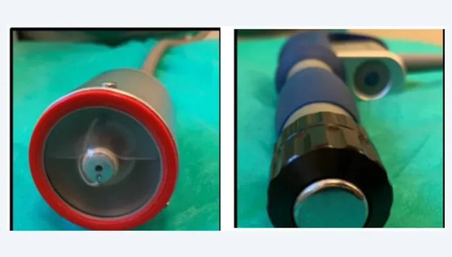
Onde d'urto extracorporeeOnde acustiche applicate sulla pelle per trattare tendini e fasce.Apri la scheda →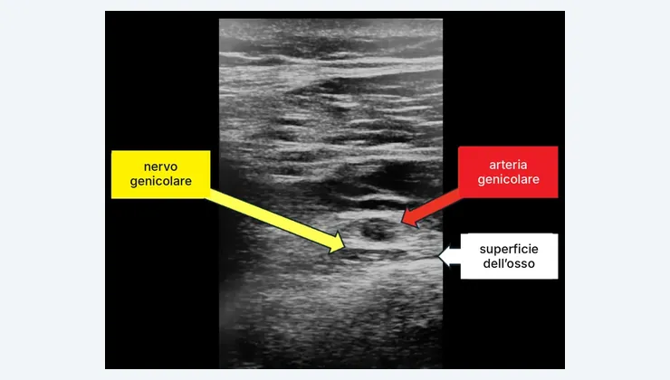
Radiofrequenza dei nervi genicolariInterrompere per alcuni mesi i nervi che portano il dolore del ginocchio.Apri la scheda →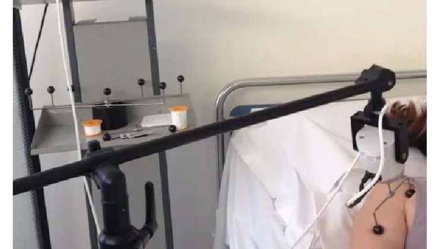
Terapia vibrazionale focaleVibrazioni su un singolo muscolo per ridurne la rigidità.Apri la scheda →Agopuntura, dry needling e terapia manuale
Senza farmaci: l'ago da solo, oppure le mani sulle articolazioni e sui tessuti molli.
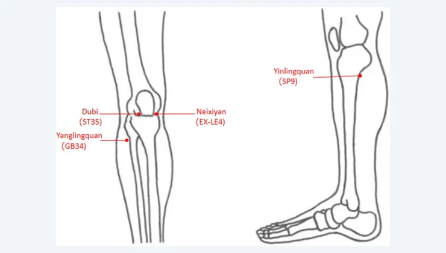
Agopuntura antalgicaDove il beneficio è stato misurato, e quanto è grande.Apri la scheda →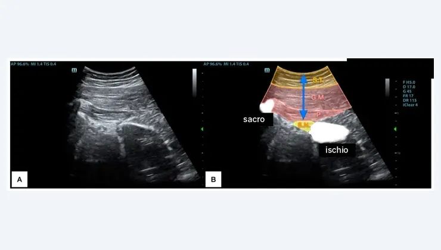
Trigger point e dry needlingL'ago nel punto dolente del muscolo, con o senza farmaco.Apri la scheda →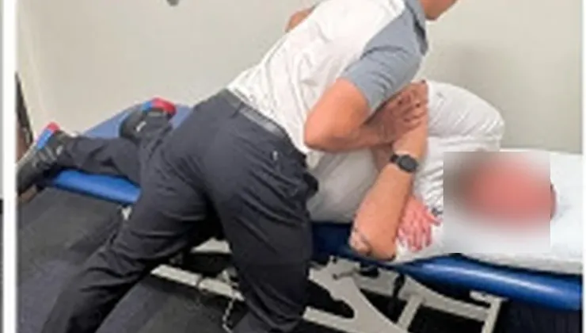
Terapia manuale e manipolazioniLe mani su articolazioni e tessuti molli, e che cosa ci si può aspettare.Apri la scheda →Riflessologia agopunturaleDa realizzare
Avvertenza. Le informazioni hanno scopo divulgativo e non sostituiscono la visita medica. In caso di dubbi o sintomi rivolgiti al tuo medico; in caso di emergenza chiama il 112.